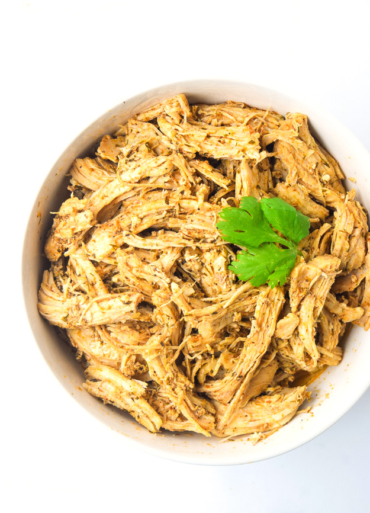

Instant Pot Cool Ranch Chicken

This recipe is a fast and delicious way to stock the fridge for the week. Whether for tacos, salads, or a sandwich, this dish makes weeknight meals easy.
Ingredients
- 2 lbs. boneless, skinless chicken breast
- 2 tbsp. ranch seasoning
- 2 tbsp. chicken taco seasoning
- 1 tbsp. olive oil
- 1 tbsp. red wine vinegar
- 3/4 cup low sodium chicken broth or stock
Instructions
- Combine seasonings in a bowl and mix well.
- Combine wet ingredients together in a separate bowl and mix well.
- Cut chicken breast into strips, then place in the Instant Pot.
- Add seasoning, mix well, then add the wet ingredients.
- Seal lid, set the Instant Pot to "Poultry" (or set to 15 minutes).
- When the cycle finishes, let the pressure release naturally. Afterwards, shred chicken, then serve.
Home